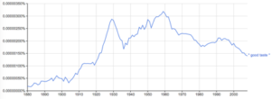

The great thing in all education is to make our nervous system our ally instead of our enemy. . . A 'character,' as J.S. Mill says, "is a completely fashioned will".
William James, The Laws of Habit
"Taste" is a word and an idea that comes from another time. But I think it's loss is a big deal. First there's some good news about its demise. The idea of taste was freighted with class superiority. Good taste is typically taken to be associated with the upper and upper-middle classes. There's also the idea of taste as setting some bounds on public discussion - which doesn't have much going for it. So in some ways we're good to be rid of it. But the upside of taste - the thing we've lost - is the idea of a desire that's not a simple 'preference' but somehow an enlightened preference - and one that's typically acquired. It's an ability to see a little beyond simple appearances, to allow experience to speak of something deeper than appearances. An object in bad taste typically appeals to the untutored. Before megalomania overcame her, before she became a mega-star, Edna Everage's schtick involved satirising bad taste by referring to the art-work she liked to have around. Ducks flying across the wall, a picture of Chinese girl with a beautiful green face. She would demonstrate her sense of taste by advising her audience "You can always tell an original. The eyes follow you all around the room".

A Google n-graph of the use of the expression "good taste" at its height in 1930 and leading up to 1960 as you can see. And here's the thing. The death of taste as a cultural resource is killing us. Fast food tastes yummy. It's scientifically optimised to allow you to mainline unmediated yumminess. When I was a kid and first encountered Kentucky Fried Chicken and then saw McDonalds restaurants I remember thinking that McDonalds would never beat Kentucky because Kentucky was so, so yummy - so rich as all that salt, sugar and oil and those secret herbs and spices made the chicken taste unbelievably good. My fish and chip shop just wasn't close. Anyway, I was wrong. McDonalds, slightly less in-your-face yummy to my juvenile palate seems to have won that battle. Perhaps Maccas were optimising for my adult palate. Today I find the oiliness of KFC off-putting but I do wolf down a very occasional Maccas hamburger when travelling. I enjoy the utter accessibility of Macca's scientifically optimised yumminess. It's not hard to see how I could crave them - well I do crave them actually - but only very rarely.The moderation of my craving for Maccas is a result of my having an acquired taste for better food (even if I like staying in touch with my 'roots' as it were - in my unacquired tastes). This has been a process of acculturation including quite self-conscious self-directed acculturation and habituation. Thus for instance when I was in my twenties I decided I'd like to drink tea without sugar. It took about three weeks and having acquired my taste for sugarless tea I now enjoy tea more - I can taste so much more - and I find sugar in tea disgusting. I did the same for cappuccinos several decades later (though I still think the chocolate topping is an improvement on latte). I'm not really a health nut. But just as I try to get good value rather than bad value when shopping, I just try to steer myself towards tastes that I think might improve my life in some way whether that's through feeling better, better health, and/or just greater enjoyment once certain tastes have been acquired. Somehow as capitalism has munched its way through our civilisation, the core of the culture has bailed out on taste. We're all consumers now and consumers have a human right to consume Whatever they Goddamn Please. And advertisers have a right to advertise and sponsor their little wallets off and entice our kids to go with their unacquired tastes. And of course it's not just food. Our taste in culture and politics is the same. In each case with disastrous consequences. Not only is there now a huge industry in sugar hit 'Upworthy' linkbait journalism but political journalism is being hollowed out. This is partly because of the lack of resources, but mostly because cheap engagement - shock jock alarums and excursions and Gotcha - are profit maximising (input minimising and audience maximising) strategies. In this fascinating study, James Cutting:
varied the quality of art that the participants were exposed to. Half the treatment group of undergraduate students were repeatedly exposed to the critically respected work of John Everett Millais over a seven week lecture course and half to Thomas Kinkade, who is a good deal less respected, although much more popular.
They compared the opinions of this treatment group to a control group who had no repeated exposure. You can see from the graph below that there was a significant decline in participants' opinions of the work of Thomas Kinkade the more they saw the pieces, while the opposite holds true for John Everett Millais. The exposure effect only held true for the "good" art.

This seems like pure Aristotle (as far as I understand it anyway) and the core of lots of other philosophies of life. Happiness is the true destiny of humanity, but is possible only through discovering and aspiring to The Good - a process in which character emerges from the habitual reinforcement of good, rather than bad choices and this leads to the acquisition of higher tastes - in the place of lower ones. One can see it in the lives of many older people who've more or less entirely jettisoned any taste they might once have had for baubles. Of course, as one would expect, if taste has anything to recommend it, it should also be a hugely useful thing. As W. I. B. Beveridge (a person I'd never heard of until I read this post a few months back) noted in 1957:
The elegance and aptness of the English which is produced largely automatically is a function of the taste we have acquired by training in choice and arrangement of words. In research, taste plays an important part in choosing profitable subjects for investigation, in recognising promising clues, in intuition, in deciding on a course of action where there are few facts with which to reason, in discarding hypotheses that require too many modifications and in forming an opinion on new discoveries before the evidence is decisive.
Indeed, I'd argue that modern academia has almost entirely lost this sensibility and instead focuses on objective yardsticks of intelligence qua cleverness. Certainly that's been the undoing of modern economics which drowns in the utter senselessness of extremely clever individuals capable of persevering in lines of argument that don't pass the laugh test. Not only that by they win Nobel Prizes for it. It would be easy to argue that the old class-based code remains. Those at the top of our society moderate their taste for fast food at least of the physical kind. Virtually no-one with aspirations to lead or even be in the middle, let alone the upper middle class smokes (smoking is an acquired addiction, so it's a bit different, but we'll just press on and pretend no-one noticed) and there's never been so much obsession with body weight and health. Still the fulcrum of our culture is freedom - of consumption and of production. Today taste is outsourced to global brands. And many (of course by no means all) of the most expensive brands do have taste. However kind of by definition, if you need to buy the brand to show the taste, you're lacking in that commodity yourself. And brands used to be bad taste. By definition. You couldn't wear them on centre court at Wimbledon and even today the highest levels of taste in clothing cannot be worn adorned with brand names - at least not explicitly. The point of such taboos is to insist that taste cannot be bought. Indeed it cannot be conveyed like property. It can't be won by simple lessons - it must be acquired. A century ago, the architecture of great public buildings was invariably an expression of the higher achievements of our civilisation - and that was sending a subtle signal of our expectations of the great institutions that inhabited them. In this sense the development of a person's character - associated with their acquiring taste - was conjoint with the core of the culture, the core of the civilisation. But for the first time in history, that's not true any more.
You always bowl me over with this sort of stuff...it is asking for a response but is complex enough for me not to snap off a reply, but further digest the piece.
I can see now why they named that ABC teev show on ads (branwashing?) the Gruen Transfer.
Here, a work of art is something that conditions folk more thoroughly (neurology and burgers?), even over and beyond people's own interests relating to things like adequating budgeting for necessities through to unguessed at health issues later in life.
Does it beg a question as to what is "civilised" and hence perhaps, in "good taste".
Finally, am glad you mentioned Aristotle. Aristotle, the last of the great line of Socratic thinkers, seems to have been the first philosopher to grasp the difference between use value and exchange value, as well as developing a political theory involving the beginning of a concept of rationality and participation anticipating the concept of the dialectic.
The motto that the unconsidered life is hardly worth the consideration is ascribed to these folk and I feel grateful that I got to find out about them and their discussions and dialogues which show the aesthetic beauty of the thought processes, in motion and confirmed by results.
Doh! I snapped off a reply...
Great article.
Good taste often (not always) starts with training and knowledge acquisition. For example, by learning a musical instrument one's taste in music develops as the depth and intricacies of music become clearer.
However as you say, one's unique, personal character must also be expressed. And this cannot be learned simply by reading or schooling. A tastefully decorated house strongly expresses the personal life, personality and opinions of its owner.
The internet has accelerated the former - knowledge acquisition is no longer the lifelong slog that it once was. But a unique expression of character is as hard to develop as ever. This imbalance is visible in many hipsters, who whilst, in their defense, are noble advocators of good taste, fall short of actually having true good taste.
Chacun a son gout, Nicholas.
Or should I reveal my own superior taste and say a chacun son gout.
But then, sweet, sour, salty, bitter and umami is all there is, really.
Similar story in Art, close attention and long study of actual artworks , on their own terms became derided as- bourgeois connoisseurship, was initially replaced by theoretical interpretations (by now its more like simple indifference to what you can actually see). Taste is at heart feeling; It took me a long time to realise that not everybody can taste-hear color.
I wouldnt call what you describe as 'taste', particularly not when you talk about research and general intellectual life. Rather, the word 'sound' seems to fit your description, or perhaps even 'solid' and 'courageous'. The English notion of 'a sound person' has a lot of different elements in it, including an awareness of how the world works, how to get things done, and a kind of determination to hold on to an inner set of values and goals despite the world and no matter what the cost. There is also a determination involved to see those inner goals and values through, ie to pursue them and develop them. The word 'taste' doesn't cover that, I think. Taste is merely the facade, the lubricant between the person and the rest of the world, and can be adopted by someone who is neither sound nor solid nor courageous, in which case it indeed is merely a signal of social standing.
I agree with you that a good aspect of it is that it gives rise to civil courage and to diversity of thoughts. It breeds eccentrics and intellectuals, as well of course as complete nut-cases steadfastly holding on to their imperturbable beliefs and habits. The Marquis de Sade would probably count as a man of taste too!
I am not sure though that there is really a large cost of having little of it in a culture. If there is a sustained need, it can be produced or imported. The actual economy suffers very little from what goes on in the battle for journal space.
My first reaction is to recommend to Nicholas the new "Create Your Taste" system at McDonalds. Surprisingly good, and overcomes permanently the trauma of their burgers with beetroot only being available for a limited time...
It's significant that the art comparison was between Millais and Kinkade - between a fourth-rate and a tenth-rate artist. If they'd thrown in a top-rater (Goya, say, or Giotto) it would perhaps have shown up some of the problems with 'taste' - the taste that at the time preferred Millais to late Turner, for example. Taste is precisely that which artists have to sacrifice. Whether taste as a concept is applicable in that sense to economics is something that would need more argument.
This article by Roger Scruton "What has art got to do with beauty these days" seems germane to the post, too.
Chris I think, the study tested what happened when the participants viewed the same artworks, by the same artist,repeatedly. I.e they were not comparing two artists, rather they were comparing their first experience of a artists works,with their experience after repeated viewings.
As for rankings, people either have musicality or the do not.
Thanks John,
I think I often do something similar in the areas I practice which is to have a kind of well developed sense of commonsense - accessible by intuition - which I think is more easily picked up by others than it is.
I don't mean by that that I drown people in jargon - because I don't. But if I'm trying to explain something to someone, I address my words to some notion of what someone who hasn't thought about this would think. I think that inevitably means I'm addressing myself in that (imagined) situation. That usually works quite well with people who are quite outside the world I work in, but lots of insiders have lots of other baggage. Sometimes it's hard to address that.
Thanks Paul,
I can see why you think of taste that way, but certainly lots of people give it much more solidity than that. (As I think John has above). And as Beverage does above. Here's Sherwood Anderson "Next to occupation is the building up of good taste". Clearly not a superficial thing for him - kind of central to a life.
But the terminology isn't important as I'd agree I'm stretching the concept a little, and letting it leak out into character. The real point I think is that it's acquired in the same way - through experience, opening one's eyes and intelligence to that experience, and through integrity.
As for its 'cost'. Well I'm thinking of cost in terms beyond mere dollars and cents, but even there, many of the worst features of financial markets - which I adverted to in the post - are driven by people in pursuit of the quick, or sure speculative buck. That's pretty costly I'd say.
+ 1 Beetroot in burgers.
Tom Griffiiths came up with a wonderful metaphor for some forms of insider expertise: The cutting edge of conformity :-)
I agree with you Nicholas yet there is still a taste distinction between the middle class and the working class. You don't wear a baseball cap (Do you?) and you are not obese.
Think of Mark Latham's behaviour. The middle class don't do things like that. He can't escape Green Valley. Mostly the tasteless can't write but he can and his book gives us an insight by saying things you and I just wouldn't.
So, though much is taken, much abides...
+1
Mike Pepperday, that needs to be unpacked, because I am just not sure that middle class people universally are bearers of good taste or in some cases, just attempts at an appearance of it. Likewise a working class person on meagre resoures might reveal, pound for pound, relatively good taste both against others of her millieu and her alleged betters. Maybe taste relates to intellect and character as evidence of better adjustment to reality.
Would Latham be considered bourgeois or proletarian and what would constitute "bad taste", depending on one's location within the discourse?
People link Latham to the more crass species of econnomic rationalism, yet I'd consider his attempt to save Tasmanian forests in 2004 an act of good taste.
https://www.facebook.com/veganoutreach/videos/10153498596271508/?pnref=story
Exposure is marketing. 'Taste' is self-indulgent marketing, hipsterism being the ultimate form of it -- character marketing. Marketing is marketing. The difference is that there is onlyonemarket now, and while big money and preference separate, marketing is not supportive of social stratification. (disclosure I work in an art museum)
I once went to a party where the invitation explicitly required dressing in good taste. It is decades ago yet it would still work. I remember a striking girl in a bright red mini skirt and black fish net stockings. I greased my hair and combed it back.
We can put our finger on bad taste, not on good. If you wear an Armani suit you are saying "Look at me: I have good taste" which is oxymoronic. The attempt to market good taste must be at least partly self-defeating.
Yes Paul, the divide between middle class and working class is pretty universal. The garden gnomes and flying ducks—the middle class just doesn't. It has nothing to do with Latham's economic opinions or saving the rain forest. It has everything to do with his tasteless (What better word? Crass? Ignorant?) attitudes as manifested in the behaviour that we have seen on TV on several occasions. Thumping a taxi driver is a sort of logical extension. Just not the done thing, you know.
He is a useful example because he is a rare instance of poor taste coming to prominence. Shock jocks are not all that prominent. If they weren't given so much publicity by Media Watch I'd be unaware of them. (The ABC seems obsessed with them.) Latham's book is quite a page-turner but I do wonder about the initial conversation with his (inevitably very middle class) publisher. Probably, the MS was even grosser.
Working class tastelessness seems to me very clear. I should think that from a one-minute video of the patrons of a busy shopping mall, you could say what kind of suburb that mall was in. Depending on your background you could estimate local real estate prices and levels of education, gambling and domestic violence. The basis for your judgement? Taste.
It's the lack, rather than the possession, that you can spot. It's those who don't "get it," rather than those who do. This has something to do with the inability to postpone gratification, the inability to act in one's long-term self-interest, an inability to take advice and learn, an inability to trust.
My mother once attended a "dress in bad taste" party on an ocean liner. A woman turned up quite well dressed but with one thing - her shoes I think - deliciously badly matched with her outfit. Mum was going to compliment her on it, but decided perhaps she wouldn't. And so didn't.
Two nights later there she was - same dress, same shoes ;)